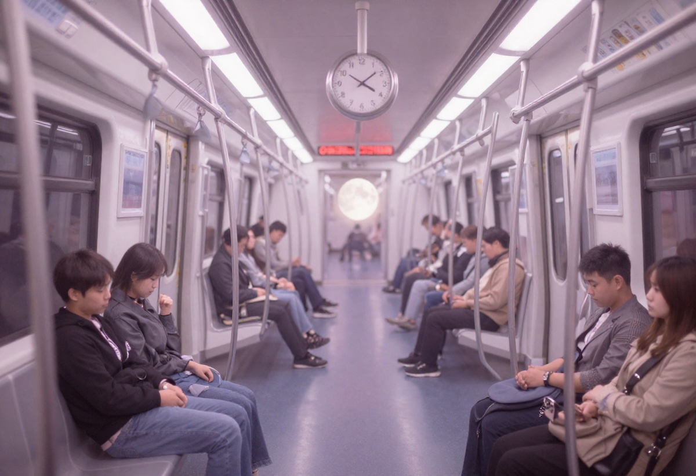

Rüyada Metroda Olduğunu Görmek Ne Anlama Gelir?
Rüyalar, bilinçaltımızın sembollerle konuştuğu özel alanlardır. Günlük hayatta sıkça kullandığımız mekânlar, rüyalarımızda çok daha derin anlamlar kazanabilir. Rüyada metroda olduğunu görmek, genellikle kişinin hayat yolculuğu, iç dünyası ve kontrol duygusuyla ilişkilendirilir. Metro; yerin altında ilerleyen, belirli bir rotası olan ve duraklarla bölünen bir ulaşım aracıdır. Bu özellikler, rüyanın yorumlanmasında önemli ipuçları sunar.
Rüyada Metroda Olmanın Genel Yorumu
Rüyada metroda olmak, çoğu zaman hayatın hızlı ve planlı bir dönemine girildiğini simgeler. Rüya sahibi, kendi kontrolü dışında gelişen ama yine de belli bir düzene oturmuş süreçlerin içinde olabilir. Metro, bireysel kararlardan çok sistemin bir parçası olmayı temsil eder.
Bu rüya aynı zamanda:
- İç dünyaya yönelmeyi
- Duyguların bastırılmasını
- Görünmeyen ama etkili süreçleri
sembolize edebilir.
Rüyada Metroya Binmek Ne Anlama Gelir?
Rüyada metroya bindiğini görmek, yeni bir sürece dahil olmayı ifade eder. Bu süreç genellikle iş, eğitim ya da özel hayatla ilgilidir. Rüya sahibi, kendi isteğiyle ya da şartlar gereği bir yolculuğa çıkmıştır.
Eğer metroya gönüllü olarak biniyorsanız:
- Kararınızdan eminsinizdir
- Hayatınızda net bir yön belirlemişsinizdir
Zorla ya da tereddütle biniliyorsa:
- Baskı altında alınmış kararlar
- Başkalarının beklentileriyle hareket etme durumu
ön plana çıkar.
Rüyada Metroda Kaybolmak
Metroda kaybolduğunu görmek, hayat yönünün belirsizleştiğine işaret eder. Rüya sahibi, hangi yöne gideceğini ya da hangi kararı alacağını bilemiyor olabilir. Özellikle aktarma istasyonlarında kaybolmak, birden fazla seçenek arasında kalmayı simgeler.
Bu rüya çoğu zaman şu duygularla ilişkilidir:
- Kararsızlık
- Zihinsel yorgunluk
- Kontrol kaybı hissi
Rüyada Metrodan İnmek
Rüyada metrodan indiğini görmek, bir sürecin sona ermesi anlamına gelir. Bu bir iş, ilişki ya da uzun süredir devam eden bir bekleyiş olabilir. Metrodan doğru durakta inmek, doğru zamanda doğru karar alındığını gösterir.
Yanlış durakta inmek ise:
- Erken vazgeçme
- Aceleyle alınmış kararlar
- Sonradan pişmanlık duyulabilecek tercihler
şeklinde yorumlanır.
Rüyada Metro İstasyonu Görmek
Metro istasyonu, bekleme ve hazırlık dönemini temsil eder. Rüya sahibi henüz harekete geçmemiştir ancak zihinsel olarak bir yolculuğa hazırdır. Kalabalık bir istasyon, çevresel baskı ve başkalarının etkisini; boş bir istasyon ise yalnız başına alınacak kararları simgeler.
Rüyada Hızlı Giden Metro Görmek
Metro çok hızlı gidiyorsa, rüya sahibinin hayatındaki gelişmeler de aynı şekilde hızlanmış olabilir. Bu rüya:
- Zamanın yetmediği hissi
- Hayatın kontrol dışı ilerlemesi
- Durup düşünmeye fırsat bulamama
anlamlarına gelir.
Psikolojik Açıdan Rüyada Metro
Psikolojik yorumlara göre metro, bilinçaltını temsil eder. Yer altında ilerlemesi, bastırılmış duyguların ve düşüncelerin varlığına işaret eder. Rüya sahibi, farkında olmadan bazı duyguları içinde tutuyor ve bunlar hayatını yönlendiriyor olabilir.
Sonuç: Rüyada Metro Ne Anlatır?
Rüyada metroda olduğunu görmek; hayat yolculuğu, kontrol, yön ve bilinçaltı süreçlerle yakından ilişkilidir. Rüyanın tam yorumu; metroda yaşanan olaylara, hissedilen duygulara ve rüyanın genel atmosferine göre değişir.
Unutulmamalıdır ki rüyalar kişiye özeldir. Aynı rüya, farklı yaşam koşullarına sahip kişiler için farklı anlamlar taşıyabilir. Bu nedenle rüyayı yorumlarken kendi hayatınızdaki gelişmeleri ve ruh halinizi mutlaka göz önünde bulundurmalısınız.